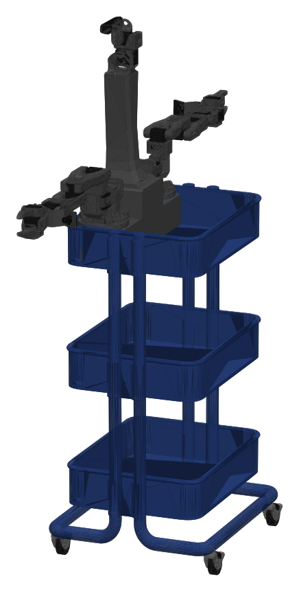
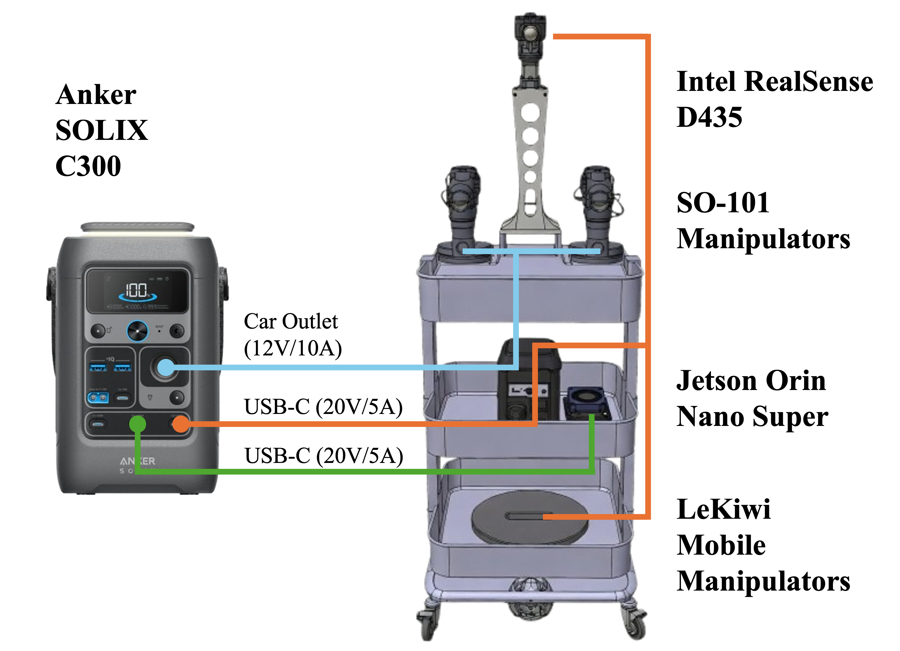

Build & Calibration Guide
Consolidated instructions for assembly, wiring, and physical validation of the dual-arm XLeRobot-Pro platform. 3D-printing files and print settings live on the Components page.
1. Build Overview
This guide walks you through building the platform with 2× SO-101 follower arms, a neck/head assembly, an omni-wheel base on an IKEA RÅSKOG cart, and an NVIDIA Jetson compute node mounted near the neck/base region.

The 3-Bus Separation
We use three independent motor buses to simplify wiring and isolate faults during motor debugging.
| Bus | Subsystem |
|---|---|
| Bus 1 | Left arm |
| Bus 2 | Right arm |
| Bus 3 | Neck and wheel base |
Recommended Build Order
- Print all parts (files & print settings on Components)
- Assemble both SO-101 arms
- Install wrist camera mounts and grippers
- Assemble cart and wheel base
- Assemble neck / top base / head
- Configure motors (before final assembly)
- Mount Jetson and route wiring
- Final mechanical assembly and cable management
- Software bring-up and bus verification
2. Assembly
Overall Assembly
A complete walkthrough of the build process. Use the chapter links in the sections below to jump this video straight to that step.
A) Cart
Assemble the IKEA RÅSKOG cart first to establish the rolling structure.
- Do not finalize cable routing through the cart yet
- Leave access for motor extensions, USB data, power, and camera cable routes
B) Arms (Joints 1–5)
Assemble both SO-101 follower arms using the step-by-step build video below.
Crucial wrist/gripper order:
- Before attaching the gripper to joint 5, install the wrist-camera attachment to the gripper
- Install the gripper claw/fingers
- Use the follower gripper approach on both arms
This order avoids reopening the wrist stack later.
C) Neck (Top Base & Head)
- Assemble the Top Base and Head.
- The head follows the same motor style and is derived from early SO-101 link patterns.
- The hollow neck doubles as a cable channel.
Jump to the neck assembly in the video above (0:00–18:51).
D) Wheels & Wheel Base
Assemble the wheels and wheel base.
Jump to the wheel assembly in the video above (18:52–32:30).
- Keep omni-wheel orientation/order exactly as documented
- Use motor cable extensions — do not rely on short direct runs
- Leave slack until top-plate routing is finalized
- Mount the top plate and connectors only after route checks
E) Integrating Components onto the Cart
Bring the arms, neck, and wheel base together on the cart for the full platform.
- Secure each arm base to the cart: pass a screw down through the arm base and the cart shelf, then thread a nut onto it from the underside — sandwich the cart shelf between the arm base and the nut, and tighten so the base clamps firmly to the cart.
Jump to the full cart integration in the video above (32:35–39:52).
3. Motor Configuration & IDs
Configure motors before final cable management and hard mounting. Many servos ship with default ID 1, so each ID must be unique per bus and the baudrate must match the board and motors.
A) Arm Motors (SO-101)
Identify each serial port, then configure the motors one at a time — set each ID and the baudrate, and repeat for both follower arms.
B) Neck & Wheel Motors (Bus 3)
Assign each ID one at a time with the repo's set_motor_id.py tool. On Linux you may need serial permissions (sudo chmod 666 /dev/ttyACM0).
ID Planning
| Bus | Recommended IDs | Mapping Notes |
|---|---|---|
| Bus 1 (Left Arm) | 1–6 | SO-101 follower mapping |
| Bus 2 (Right Arm) | 1–6 | Valid due to bus separation |
| Bus 3 (Neck & Wheels) | 7–11 | 7–8 Neck, 9–11 Wheels |
$ lerobot-find-port
# Assign a unique ID to one connected motor (repeat per motor)
$ python set_motor_id.py --port /dev/ttyACM0 --id 7 --model sts3215
# Grant serial permissions on Linux
$ sudo chmod 666 /dev/ttyACM0
L-1…L-6, R-1…R-6, B-7…B-11.
4. NVIDIA Jetson Placement
Mount the Jetson in the center rack of the cart, between the wheel base and the top plate.
- Keep mass low for stability
- Keep USB ports accessible
- Minimize cable length to the three motor control boards, two wrist cameras, one head camera, and power distribution
5. Wiring (3-Bus)
Wire the three buses as below.

A) Motor Wiring
- Bus 1 — Left arm: one dedicated controller; daisy-chain follower motors; controller output to joint 1 (shoulder pan)
- Bus 2 — Right arm: one dedicated controller; same layout as left arm
- Bus 3 — Neck & wheels: one dedicated controller; use extensions for clean routing from the lower wheel plate to the upper electronics
Leave service slack near each joint (especially wrist/gripper), avoid tight bends near connectors, keep motion cables away from pinch points, and label both ends of every extension.
B) Power Wiring
- Battery mounted low and upright in the cart
- Main power line routed to a distribution point
- Separate fused outputs for left-arm bus, right-arm bus, neck/wheel bus, and the Jetson power path
- Add strain relief at the battery and distribution points
C) Camera Wiring
- Wrist cameras (×2): route each cable along its arm with full-motion slack; secure at intervals; keep compute-end connectors accessible
- Head camera: route through the hollow neck; leave pan/tilt slack at the head joint
6. Final Assembly
Complete final assembly, substituting the Jetson where older instructions reference a Raspberry Pi.
- Complete wiring and cable management before clamping the top base into the cart
- Clamp arms onto the cart corners after route verification
Final Checklist
Mechanical & Power
- Jetson mounted securely
- Battery secured and upright
- No cable pinch points
- Full arm range without cable snagging
- Wheel base rotates freely
Electrical & Sensing
- All 3 buses configured and tested independently
- Motor IDs verified
- Motor directions verified
- Both wrist cameras detected
- Head camera detected
7. Hardware Calibration & Validation
Run these checks before full-stack teleoperation or training. Test one bus at a time.
A) Bus & Joint Control Sanity Check
Ping/read all motors per bus, then confirm joints respond to keyboard input.
B) Mechanical IK Calibration
Verify the gripper reaches the expected location. Check for loose servo horns or bent brackets if accuracy is low — accuracy depends on mechanical assembly quality.
C) Motion & Camera Bring-up
- Arm joints move correctly; neck axes move correctly; wheels respond with expected direction
- Wrist camera 1, wrist camera 2, and head camera streams verified
Hardware validated? Move on to software configuration.
Next Step: Software Setup ↗